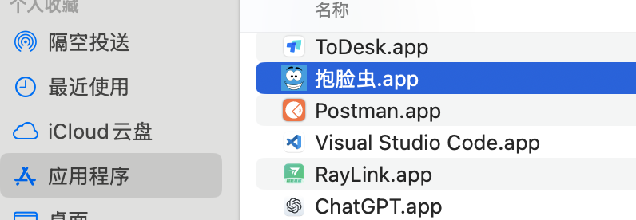

PlanA
!!!注意!!! 实在搞不定可以要求远程,或者加VX沟通
!!!注意!!! 或者加添加飞书沟通
！！！注意 ：服务器版前面步骤和桌面版(WEB版)一样，下载步骤直接看步骤7
Windows64位选
苹果M系列选
MacOS老款选
Linux系统
-
服务器版到了下载步骤直接看步骤7
1 运行
1.1 MacOS系统下运行问题解决
1.1.1 提示文件损坏
将app移动到应用目录

打开终端
执行
xattr -d com.apple.quarantine /Applications/抱脸虫.app
1.1.2 如遇到如下，提示 造成伤害
或者
在app上右键，点击显示简介（注意:显示第二个提示，点击完成后app会被放到废纸篓，需要手动恢复）
勾选「覆盖恶意软件保护」
如果没有「覆盖恶意软件保护」选项，试试在终端执行
codesign --force --deep --sign - /Applications/抱脸虫.app
1.2 Linux运行桌面版问题解决
提示libwebkit2-4.1-0找不到
sudo apt install libwebkit2gtk-4.1-dev
2 注册登录
3 搜索模型或数据集
选择搜索类型，点击回车
根据自己需要的项目，点击「克隆项目」
查看项目
4 兑换码充值
5 支付并提交项目文件到下载列表
在超时之前下载文件(这里显示的项目有29天+，和28天+)
6 下载文件(下载到本地)
6.1 设置存储目录
6.2 下载所有文件
点击下载列表
6.3 查看下载进入
6.4 速度异常慢处理(远远低于物理带宽)
可以尝试重置链接
7 远程下载(直接下载到服务器)
步骤概述：现在WEB端或者APP端操作，将文件下载到云端，然后在你自己的服务器运行服务器版下载器，把文件从远端下载到你自己的服务器
7.1 在web端或者桌面端提交项目到下载列表
注意：服务器版下载器会同步云端的所有文件，如果原来有其他项目的文件，可以先清空之后再提交新的项目文件
web端(https://www.aider.host/panel/task)
app端
7.2 访问令牌获取方法
或直接网页版
https://www.aider.host/panel/profile
7.3 服务器端下载运行下载器
注意：服务器版下载器会同步云端的所有文件，如果原来有其他项目的文件，可以先清空之后再提交新的项目文件
7.3.1 运行下载器
wget https://gitee.com/cauzz/boost/releases/download/1.0.0/D4L-linux-amd64.zip
unzip D4L-linux-amd64.zip
chmod +x d4l
./d4l -t token_xxxx -d /dir_xxx/xxx/xxx
# token_xxxx替换成令牌, /dir_xxx/xxx/xxx替换车成自己的绝对路径，注意必须对路径有访问权限
如：
./d4l -t 9aee61116c4ad44f1b339330066c660d7 -d /home/test/aaa
# 或者根据实际解压出来的文件是d4l.exe
./d4l.exe -t 9aee61116c4ad44f1b339330066c660d7 -d /home/test/aaa
7.3.2 快捷键列表
-
Ctrl D: 同步下载文件元信息(下载器只检测文件重复，不检测任务重复，在同步完成前请勿多次执行；而且如果同步被中断，建议已经同步完的任务下载完成，再执行剩余文件元信息同步，免得导致任务重复)
-
Ctrl S: 恢复任务下载
-
Ctrl P: 暂停任务下载
-
Ctrl E: 清空下载任务列表（所有）
-
Ctrl R: 重置下载链路（下载速度异常低于物理带宽速度上限时执行）
-
Ctrl B: 优化线路（因为网络等原因导致下载服务Not Ready时执行）
-
Ctrl L: 重新加载下载服务信息（因为网络等原因导致下载服务Not Ready时，执行优化线路没有生效时执行）